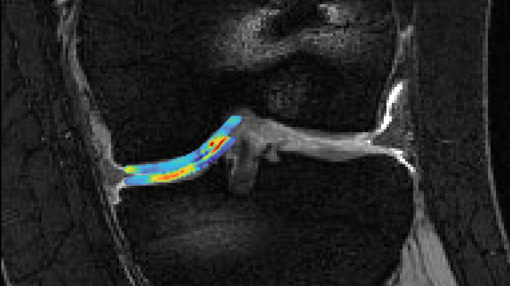
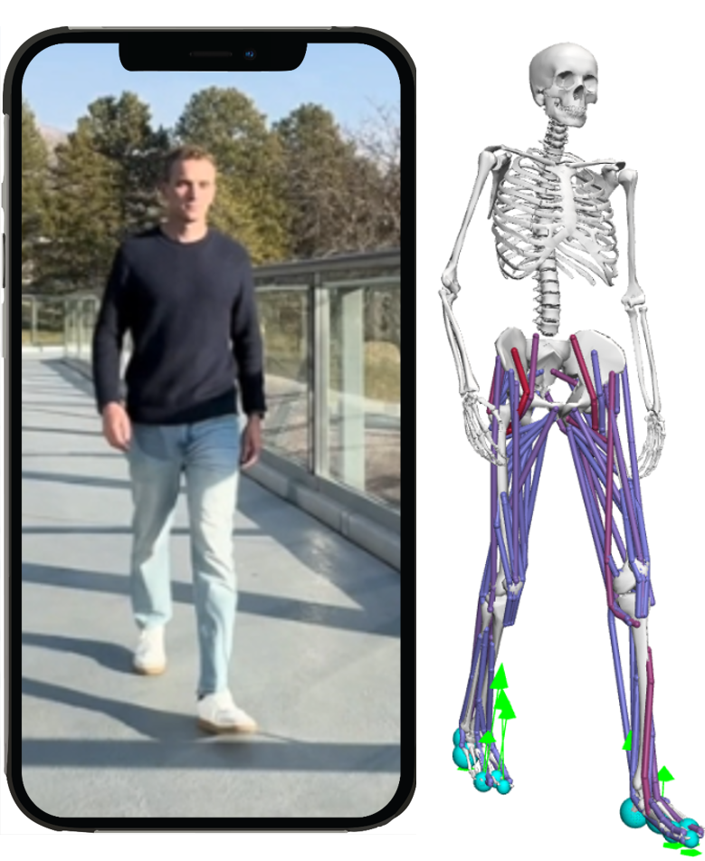
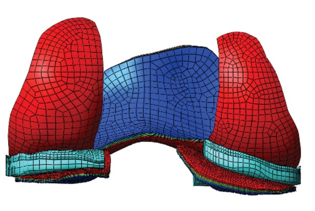
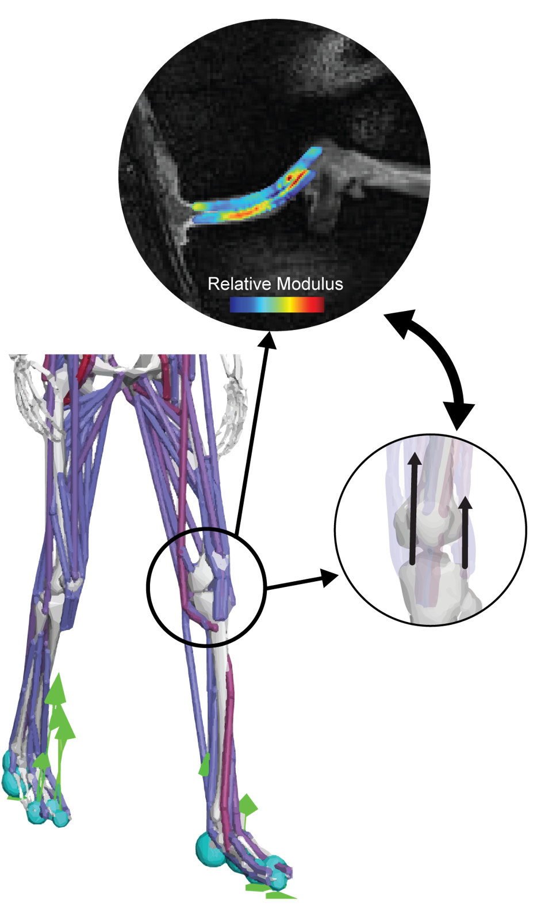
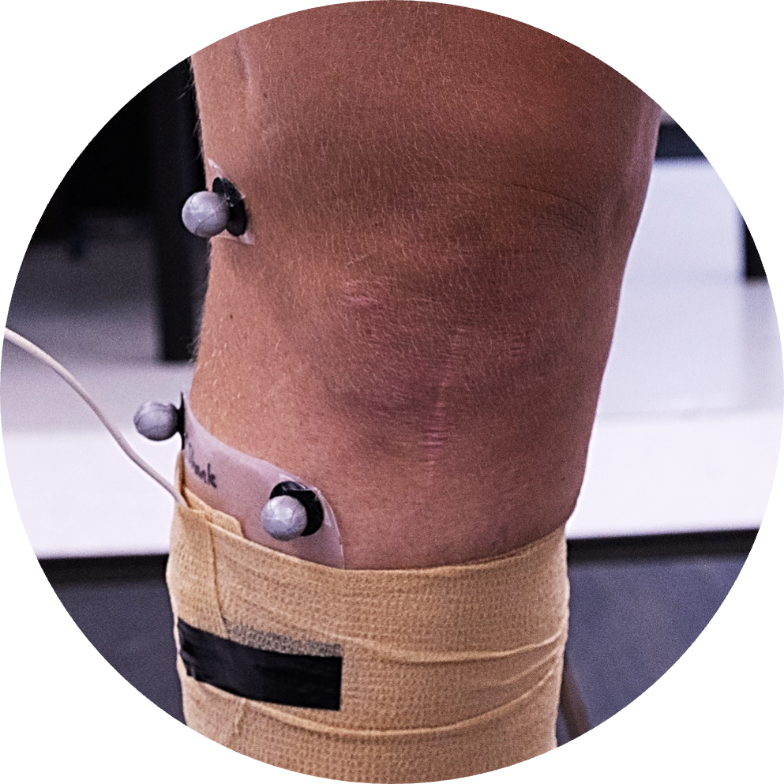
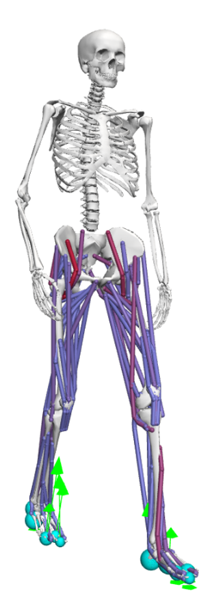

The Image-Based Musculoskeletal Mechanics Lab (IMM) will open in January 2027 in the Department of Mechanical Engineering at UC Berkeley. The lab will investigate joint mechanics across scales, from cartilage deformation within the living knee to whole-body movement captured with wearable and smartphone technologies. By integrating imaging, biomechanics, engineering, and data science, we aim to understand how mechanical loading contributes to musculoskeletal injury and diseases such as osteoarthritis, develop tools for earlier detection of tissue degeneration and injury risk, and create strategies to prevent injury, improve rehabilitation, and optimize human movement and athletic performance.

Cartilage Imaging & Elastography
Noninvasively map the mechanical health of knee cartilage with MRI, enabling detection of early degeneration before it appears on conventional imaging.

Scalable & Accessible Biomechanics
Transform ordinary smartphone video into clinical-grade estimates of joint loading using physics-informed AI, bringing biomechanics beyond the lab.

Computational Joint Mechanics
Develop image-based finite element and inverse models to estimate tissue properties and internal joint forces that cannot be measured directly.

Early Osteoarthritis Detection
Identify biomechanical markers of osteoarthritis before irreversible structural changes occur.

Injury Recovery & Rehabilitation
Characterize knee mechanics after injuries such as ACL tear to improve rehabilitation, restore healthy movement, and reduce reinjury risk.

Human Movement & Athletic Performance
Use scalable biomechanics to understand, optimize, and personalize how athletes move, recover, and perform.

Personnel
Department of Mechanical Engineering, UC Berkeley
Dr. Emily Y. Miller is an incoming assistant professor in the Mechanical Engineering Department at UC Berkeley. She earned her PhD in Biomedical Engineering at the University of Colorado Boulder and is currently completing postdoctoral training in the Movement Bioengineering Lab at the University of Utah. Her research seeks to transform how musculoskeletal health is measured, from advanced MRI of cartilage to accessible tools that quantify movement and joint loading in everyday settings.
Join the lab
The Image-Based Musculoskeletal Mechanics Lab (IMM) will open at UC Berkeley in January 2027 and is recruiting PhD students, postdoctoral scholars, and undergraduate researchers who are passionate about imaging, biomechanics, machine learning, and musculoskeletal health. If you are interested in joining the lab, please email a brief description of your research interests and your CV to emily.y.miller@utah.edu.
Our lab will be built on collaboration, curiosity, and a commitment to needs-driven science. We will welcome team members from diverse backgrounds who are excited to work across traditional disciplinary boundaries. Whether your expertise is in engineering, computer science, biology, physics, kinesiology, or another field, we believe that the most impactful discoveries emerge when diverse perspectives come together to solve meaningful problems.